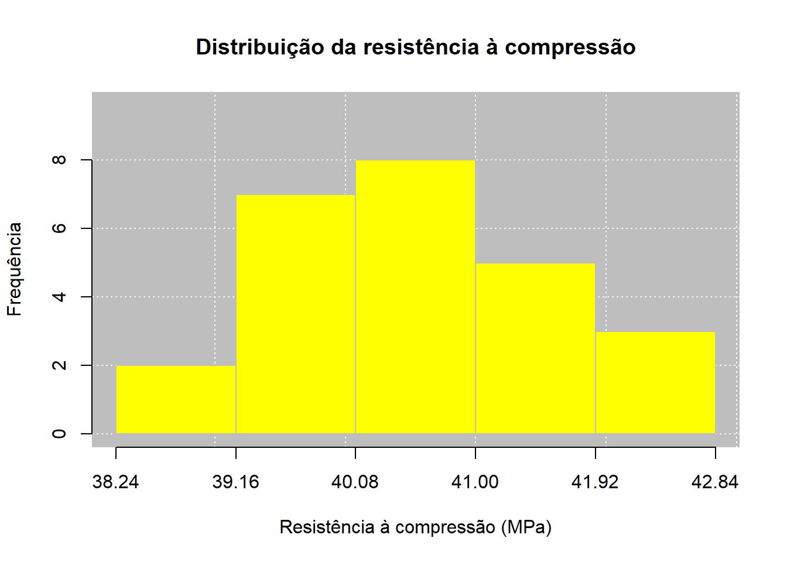

| Corpo de Prova | Resistência à compressão (MPa) |
|---|---|
| 1 | 40.6 |
| 2 | 41.9 |
| 3 | 40.4 |
| 4 | 40.0 |
| 5 | 39.2 |
| 6 | 42.1 |
| 7 | 39.8 |
| 8 | 40.7 |
| 9 | 41.3 |
| 10 | 38.9 |
| 11 | 40.2 |
| 12 | 39.5 |
| 13 | 41.0 |
| 14 | 40.8 |
| 15 | 39.7 |
| 16 | 42.4 |
| 17 | 40.1 |
| 18 | 39.3 |
| 19 | 41.5 |
| 20 | 40.5 |
| 21 | 38.7 |
| 22 | 39.9 |
| 23 | 41.2 |
| 24 | 40.3 |
| 25 | 42.0 |


Relatório de Aula Prática 01
Estatística e Probabilidade
Prof. Ben Dêivide (DEFIM/CAP/UFSJ)
1 📌 Introdução
Descreva o contexto da prática e sua importância.
Exemplo: análise da variabilidade em experimentos físicos utilizando uma catapulta.
A análise estatística constitui uma importante ferramenta para a compreensão, organização e interpretação de dados no campo da Engenharia Civil, especialmente em situações que envolvem ensaios experimentais, levantamentos técnicos, controle de qualidade e avaliação do comportamento de materiais e sistemas construtivos. Nesse contexto, o uso de recursos computacionais permite tornar os procedimentos estatísticos mais eficientes, precisos e reprodutíveis, favorecendo uma análise fundamentada dos resultados obtidos.
Entre as ferramentas disponíveis, o ambiente R destaca-se por oferecer recursos para manipulação, tratamento, representação gráfica e análise de dados, possibilitando a aplicação prática de diferentes conceitos estatísticos. Aliado ao pacote leem, o R permite explorar conjuntos de dados de maneira sistemática, desde sua organização e tabulação até o cálculo e a interpretação de medidas estatísticas. Entretanto, a utilização dessas ferramentas não deve se limitar à obtenção automática de resultados, sendo fundamental compreender os conceitos e procedimentos que fundamentam cada análise realizada.
Nesse sentido, a estatística descritiva apresenta-se como uma etapa essencial para a caracterização de um conjunto de dados. Medidas de posição e dispersão permitem sintetizar as principais características das observações, enquanto os coeficientes de assimetria e curtose fornecem informações adicionais sobre a forma e o comportamento da distribuição. A utilização de tabelas e representações gráficas complementa essa análise, permitindo identificar tendências, padrões, variabilidade e possíveis valores discrepantes.
Assim, esta prática propõe a integração entre os fundamentos da linguagem R, os conhecimentos de estatística descritiva e sua aplicação a dados relacionados à Engenharia Civil. A partir de um banco de dados de natureza experimental ou técnico-engenheirística, serão empregados os recursos do ambiente R e do pacote leem para organizar, representar e analisar as informações, buscando não apenas executar os procedimentos estatísticos, mas também compreender seus fundamentos e interpretar criticamente os resultados no contexto da Engenharia Civil.
2 🎯 Objetivos
2.1 Objetivo geral
O objetivo geral desta prática é desenvolver a capacidade de utilizar o ambiente R e o pacote leem como ferramentas de apoio à análise estatística de dados aplicados à Engenharia Civil, integrando conhecimentos de sintaxe e semântica da linguagem R, fundamentos de estatística descritiva e interpretação de resultados. Busca-se, a partir de um banco de dados de natureza experimental ou técnico-engenheirística, organizar, tabular, representar graficamente e analisar os dados por meio de medidas de posição, dispersão, assimetria e curtose, compreendendo os procedimentos estatísticos empregados e estabelecendo uma interpretação crítica dos resultados obtidos.
2.2 Objetivos específicos
Introduzir os fundamentos do ambiente R e de sua linguagem, com base nas 26 aulas do curso R Básico 2024, abordando aspectos relacionados à sintaxe, à semântica, à criação e manipulação de objetos e à execução de operações necessárias ao tratamento e à análise de dados;
Revisar os fundamentos da estatística descritiva, contemplando os conteúdos dos quatro primeiros capítulos do livro Estatística para Análise de Experimentos e Controle (EPAEC), com ênfase na organização, tabulação e representação dos dados, bem como nas principais medidas estatísticas;
Aprofundar o estudo das medidas de assimetria e curtose, compreendendo seus conceitos, formas de cálculo e interpretação como instrumentos complementares à caracterização da distribuição dos dados;
Utilizar um banco de dados relacionado à Engenharia Civil, contendo informações quantitativas adequadas à aplicação dos procedimentos de estatística descritiva e à discussão de fenômenos de interesse da área;
Aplicar o pacote
leempara a descrição estatística dos dados, empregando recursos computacionais para organização, tabulação, apresentação gráfica e cálculo das principais medidas estatísticas;Construir e interpretar representações gráficas e tabelas, de modo a evidenciar padrões, tendências, variabilidade e possíveis valores discrepantes presentes no conjunto de dados;
Calcular e interpretar medidas de posição e dispersão, incluindo medidas de tendência central e indicadores de variabilidade, relacionando os resultados às características do banco de dados analisado;
Determinar e interpretar os coeficientes de assimetria e curtose, avaliando a forma da distribuição dos dados e suas implicações para a compreensão do comportamento das variáveis estudadas;
Compreender os procedimentos estatísticos realizados pelo pacote
leem, não se limitando à obtenção automática dos resultados, mas reconhecendo os fundamentos matemáticos e estatísticos envolvidos na tabulação, no cálculo das medidas e na construção das representações gráficas;Discutir tecnicamente os resultados obtidos, relacionando as características estatísticas observadas às propriedades e aos fenômenos associados ao contexto da Engenharia Civil e avaliando criticamente a informação fornecida pelo conjunto de dados.
3 📚 Fundamentação Teórica
3.1 Introdução ao Ambiente R
3.1.1 O que é o R
O R é um ambiente de software livre e de código aberto voltado para manipulação de dados, cálculo estatístico e geração de gráficos. Por isso, é comum ouvir duas formas de tratamento: “o R”, quando se fala do programa/sistema como um todo, e “a linguagem R”, quando se fala especificamente da sintaxe usada para escrever os comandos. Diferente de programas estatísticos comerciais fechados, o R permite que o próprio usuário crie novas funções e as compartilhe livremente com a comunidade por meio de pacotes.
O projeto nasceu em 1991, em uma Universidade da Nova Zelândia, e foi criado por Ross Ihaka e Robert Gentleman. O primeiro lançamento oficial ocorreu em 1995, e em 1997 foi criado o CRAN, uma rede de servidores que distribui o programa, sua documentação e milhares de pacotes até hoje.
Já o RStudio é a interface (IDE — Integrated Development Environment) mais usada para trabalhar com o R. Ele não substitui o R, apenas facilita seu uso por meio de janelas, botões e atalhos: sem o R instalado, o RStudio não funciona. A tela do RStudio é dividida em quatro áreas principais: o editor de scripts (onde o código é escrito), o console (onde o código é executado), o painel de ambiente/histórico (onde aparecem os objetos criados) e o painel de arquivos/gráficos/pacotes/ajuda.
3.1.2 Os Três Princípios que Governam o R
Toda a lógica interna do R pode ser resumida em três ideias simples, propostas por John Chambers, criador da linguagem S (base histórica do R):
- Tudo que existe no R é um objeto — números, textos, tabelas, gráficos e até as próprias funções são objetos guardados na memória do computador.
- Tudo que acontece no R é uma chamada de função — até uma simples soma como
10 + 15é, por trás dos panos, uma função sendo executada. - Interfaces com outros programas fazem parte do R — o R se comunica nativamente com linguagens como C, C++, Python e com tecnologias web (HTML, JavaScript), estendendo seu uso muito além da estatística básica.
3.1.3 Sintaxe e Semântica do R
Sintaxe é o conjunto de regras que definem como o código deve ser escrito; semântica é o significado por trás de cada comando — ou seja, o que ele realmente faz quando executado. Entender essa diferença evita a maioria dos erros cometidos por quem está começando.
3.1.3.1 O Console e o Prompt de Comando
Ao abrir o R (ou o RStudio), aparece o símbolo >, chamado de prompt de comando. Ele indica que o R está pronto para receber uma instrução. Se o comando digitado estiver incompleto — por exemplo, um parêntese aberto que não foi fechado — o símbolo muda para +, indicando que o R está esperando o restante da instrução.
3.1.3.2 Comentários
Qualquer linha iniciada pelo símbolo # é ignorada pelo R e serve apenas para o programador documentar o próprio raciocínio:
# Isso é um comentário e não será executado
10 + 15Boa prática: evitar acentos e caracteres especiais (ç, ã, á etc.) em comentários e nomes de variáveis, pois diferentes sistemas operacionais podem interpretar essa codificação de forma diferente e corromper a exibição do texto.
3.1.3.3 Nomes de Objetos
Para criar um objeto, é preciso dar a ele um nome válido. As regras básicas são:
- Nomes válidos: começam com letra (ou ponto, desde que não seguido de número) e podem conter letras, números, pontos (
.) e underlines (_). - Nomes inválidos: começam com número, contêm espaços ou operadores matemáticos.
- Palavras reservadas: termos que já têm função própria na linguagem e não podem ser usados como nome de objeto, como
if,else,for,while,function,TRUE,FALSE,NULL,NA, entre outros.
O R também é sensível a maiúsculas e minúsculas (case-sensitive): idade e Idade são dois objetos completamente diferentes.
3.1.3.4 Expressões versus Atribuições
Existem dois tipos básicos de comando no R:
- Expressão: o R calcula e mostra o resultado na tela, mas não guarda esse valor para uso posterior.
- Atribuição: o R calcula o resultado e o guarda de forma permanente em um nome escolhido, mas não mostra nada na tela. Para ver o valor guardado, basta digitar o nome do objeto.
10 + 15 # expressão: mostra 25 na tela, mas não guarda
soma <- 10 + 15 # atribuição: guarda o resultado no objeto "soma"
soma # agora sim, mostra o valor guardado3.1.3.5 O Operador de Atribuição: <- versus =
Embora o R aceite o sinal de igual (=) para atribuir valores, a prática recomendada é sempre usar a seta <-:
nome_do_objeto <- valor_ou_expressaoO motivo é evitar confusão: o = já tem uma função própria e exclusiva no R, que é atribuir valores aos argumentos dentro de uma função (por exemplo, plot(x = dados)). Usar = também para criar objetos no ambiente de trabalho pode gerar erros difíceis de identificar em códigos mais longos.
3.1.3.6 Múltiplos Comandos na Mesma Linha
É possível executar mais de um comando em uma única linha, separando-os por ponto e vírgula (;). O R processa cada um, da esquerda para a direita:
x <- 5; y <- 10; x + y3.2 Como o R Guarda o que é Criado
Todo objeto criado com <- fica armazenado no Ambiente Global (.GlobalEnv), que funciona como a área de trabalho ativa da sessão. É possível consultar tudo o que já foi criado com o comando:
ls()E é possível saber em qual pasta do computador o R está trabalhando (o diretório de trabalho) com:
getwd()Ou alterar essa pasta com:
setwd("C:/meu_projeto_R")Atenção: o R não aceita barra invertida (\) em caminhos de pastas — é preciso usar sempre a barra normal (/).
3.2.1 Objetos, Tipos e Pacotes (Visão Geral)
Todo objeto no R possui um tipo básico, que define que tipo de dado ele guarda: logical (verdadeiro/falso), integer (números inteiros), double (números decimais) e character (texto). Estruturas mais elaboradas, como tabelas (data frames), não são tipos novos — são, na verdade, listas que receberam atributos extras para se comportar como tabela na tela.
Além dos recursos nativos, o R pode ser expandido por pacotes: conjuntos de funções extras criados pela comunidade. Um pacote precisa primeiro ser instalado (baixado uma única vez) e depois carregado em cada sessão de trabalho para poder ser usado:
install.packages("nome_do_pacote")
library(nome_do_pacote)Quando se quer usar apenas uma função de um pacote, sem carregá-lo por completo, usa-se o operador de dois-pontos duplo:
nome_do_pacote::nome_da_funcao(argumentos)O R é, ao mesmo tempo, uma linguagem e um ambiente: sua sintaxe é organizada em torno de poucos elementos centrais — o prompt de comando, os comentários, as regras de nomeação, a atribuição com <- e a chamada de funções — e sua semântica segue três princípios simples (tudo é objeto, tudo é função, e o R se comunica com outros sistemas). Compreender essa base é o primeiro passo para escrever código limpo, reprodutível e livre de erros comuns de digitação e de interpretação.
Apresente os conceitos principais:
- Média
- Variância
- Desvio padrão
- Amostragem
3.3 Conceitos Fundamentais
3.3.1 População (\(N\)) e Amostra (\(n\))
- População: conjunto finito ou infinito de todos os elementos que compartilham pelo menos uma característica de interesse; tamanho denotado por \(N\). É finita se pode ser totalmente enumerada, infinita caso contrário.
- Amostra: subconjunto representativo extraído da população, tamanho \(n\). É sempre finita, pois todos os seus elementos precisam ser efetivamente examinados. Quando se tem acesso a todos os elementos da população, faz-se um Censo, o que elimina a necessidade de inferência estatística.
Esses dois símbolos (\(N\) para população, \(n\) para amostra) percorrem quase toda fórmula do restante do documento — inclusive determinando qual versão de uma fórmula usar (populacional ou amostral).
3.3.2 Classificação de Variáveis
A variável é a característica pela qual se deseja descrever a população — o mecanismo operacional da pesquisa. Classifica-se assim:
- Qualitativa (expressa atributo/categoria): Nominal — sem ordenação natural (ex.: sexo, estado); Ordinal — com hierarquia lógica (ex.: classe social, faixa etária).
- Quantitativa (valor numérico inerente): Discreta — resulta de contagem, sem valores intermediários possíveis (ex.: número de erros); Contínua — resulta de mensuração, pode assumir qualquer valor real num intervalo (ex.: resistência à tração).
Três ressalvas importantes do texto: (1) uma variável quantitativa pode ser recodificada como qualitativa ordinal (idade em anos → faixa etária); (2) números que servem só como identificador (código de sexo 1/2) continuam sendo qualitativos; (3) na prática toda variável contínua sofre alguma discretização pela limitação dos instrumentos de medição, mas sua modelagem teórica permanece contínua.
3.4 Notação de Somatório
Base algébrica de quase todas as fórmulas seguintes — necessária para sintetizar somas repetitivas de forma compacta.
3.4.1 Somatório Simples
\[\sum_{i=1}^{m} X_i = X_1 + X_2 + \dots + X_m\]
\(i\) é o índice de posição (começa em 1), \(m\) é o limite superior (pode ser \(n\) ou \(N\)), \(X_i\) é o valor da observação \(i\). Representa a soma acumulada de todos os valores de \(X\) da primeira até a \(m\)-ésima observação. Em R: sum(X).
3.4.2 Somatório dos Quadrados vs. Quadrado do Somatório
\[\text{(A) } \sum_{i=1}^{n} X_i^2 = X_1^2+\dots+X_n^2 \qquad \text{(B) } \left( \sum_{i=1}^{n} X_i \right)^2 = (X_1+\dots+X_n)^2\]
O texto marca essa distinção como fundamental por ser a fonte de erro mais comum no cálculo de medidas de dispersão: em (A) eleva-se cada observação ao quadrado e depois soma-se (sum(X^2)); em (B) soma-se tudo primeiro e eleva-se o resultado final ao quadrado (sum(X)^2).
3.4.3 Duplo Somatório
\[\sum_{i=1}^{n} \sum_{j=1}^{n} X_i Y_j\]
Usado quando se soma sobre duas indexações distintas (modelos multivariados, tabelas de dupla entrada, regressão linear): fixa-se o índice externo \(i\) e percorre-se toda a variação do índice interno \(j\), repetindo até esgotar todas as combinações — soma dos produtos cruzados entre dois conjuntos de dados.
3.4.4 Propriedades Algébricas do Somatório (Teorema 1.1)
\[\text{I) } \sum a X_i = a\sum X_i \qquad \text{II) } \sum_{i=1}^n k = nk \qquad \text{III) } \sum (aX_i \pm bY_i) = a\sum X_i \pm b\sum Y_i\]
I: constante multiplicativa sai do somatório. II: somar uma constante \(k\), \(n\) vezes, equivale ao produto \(nk\). III: o somatório de uma combinação linear de duas variáveis é igual à combinação linear dos somatórios individuais.
\[\text{IV) } \sum_{i=1}^{n} (X_i - \bar{X}) = 0\]
Propriedade do Desvio Nulo: a média é o ponto de equilíbrio perfeito da distribuição — a soma dos desvios positivos se anula exatamente com a soma dos desvios negativos. É por isso que medidas de dispersão baseadas em desvios (Tópico 5) precisam elevar ao quadrado ou usar módulo, senão o resultado seria sempre zero.
\[\text{V) } \sum_{i=1}^{n} (X_i - \bar{X})^2 = \sum_{i=1}^{n} X_i^2 - \frac{\left( \sum_{i=1}^{n} X_i \right)^2}{n}\]
Identidade Descritiva da Soma de Quadrados de Desvios: permite calcular a soma de quadrados dos desvios usando apenas a soma dos quadrados dos dados brutos e o quadrado da soma geral — evitando ter que calcular cada desvio individual manualmente. É a “fórmula prática” usada por trás de var() no R.
3.5 Organização de Dados e Frequências
Dados coletados sem ordenação são dados brutos; o primeiro tratamento é organizá-los.
3.5.1 Dados em Rol
\[X_{(1)}, X_{(2)}, \dots, X_{(n)}\]
Ordenação alfanumérica crescente ou decrescente dos dados brutos. Os parênteses no índice indicam posição após a ordenação: \(X_{(1)}=\min(X_i)\), \(X_{(n)}=\max(X_i)\). É a fase inicial indispensável de qualquer análise de variável quantitativa, pois já revela os limites do conjunto e é pré-requisito para o cálculo da mediana. Em R: sort(X).
3.5.2 Frequência Relativa
\[F_{ri} = \frac{F_i}{\sum_{i=1}^{k} F_i}\]
\(F_i\) = frequência absoluta do grupo \(i\) (número de vezes que o valor/grupo foi observado, com \(\sum F_i = n\)). \(F_{ri}\) padroniza essa contagem em proporção (intervalo \([0,1]\)), o que facilita comparar grupos com totais diferentes.
3.5.3 Frequência Percentual
\[F_{\%i} = F_{ri} \times 100\]
Conversão da frequência relativa para escala percentual — a soma de todas as frequências percentuais é sempre 100%. É a forma de apresentação padrão em relatórios técnicos.
3.5.4 Frequência Acumulada “Abaixo de” e “Acima de”
\[F_{ac\downarrow i} = \sum_{j=1}^{i} F_j \qquad\qquad F_{ac\uparrow i} = \sum_{j=i}^{k} F_j\]
A primeira responde “no máximo, quantas observações têm valor igual ou inferior a este patamar?” — soma do primeiro grupo até o grupo \(i\); o último valor acumulado é sempre \(n\). A segunda responde “no mínimo, quantas observações têm valor igual ou superior?” — soma do grupo \(i\) até o último (\(k\)); o primeiro valor acumulado é \(n\), decrescendo até coincidir com a frequência simples do último grupo. Se a pergunta exigir exclusão do limite da própria classe (“estritamente acima/abaixo”), os somatórios mudam para \(\sum_{j=1}^{i-1}\) e \(\sum_{j=i+1}^{k}\).
3.5.5 Construção de Intervalos de Classe (variáveis contínuas — algoritmo de 7 passos)
Como valores contínuos raramente se repetem, agrupam-se em classes para tornar a análise inteligível.
Passo 1 — número de classes: \[k \approx \begin{cases} \sqrt{m}, & m \le 100 \\ 5\log_{10}(m), & m > 100 \end{cases}\] Arredonda-se para o inteiro mais próximo; evita-se \(k<3\), e reinicia-se o cálculo se alguma classe resultante tiver frequência zero.
Passo 2 — amplitude total: \(A_t = X_{(n)} - X_{(1)}\) (distância entre maior e menor valor).
Passo 3 — amplitude de cada classe: \[c = \begin{cases} \dfrac{A_t}{k-1}, & \text{Amostra} \\ \dfrac{A_t}{k}, & \text{População} \end{cases}\] A divisão por \(k-1\) na amostra funciona como correção, sob a premissa de que uma amostra dificilmente contém os valores extremos reais da população (Ferreira, 2009).
Passo 4 — limite inferior da 1ª classe: \[L_{i1^a} = \begin{cases} X_{(1)} - \dfrac{c}{2}, & \text{Amostra} \\ X_{(1)}, & \text{População} \end{cases}\]
Passo 5 — construção das classes: notação \(L_i \mid\!\!\text{---}\, L_s\), com limite inferior inclusive (fechado) e superior exclusive (aberto); o limite superior de uma classe vira o inferior da seguinte. A última classe pode, opcionalmente, fechar os dois lados.
Passo 6 — ponto médio da classe: \[X_{\sim i} = \frac{L_{i} + L_{s}}{2}\] Sua adoção se justifica pela hipótese tabular básica: assume-se que os dados dentro de uma classe se distribuem aproximadamente de forma uniforme, tornando o ponto médio o valor que minimiza o erro de representação. É o valor usado em todos os cálculos posteriores (média, variância, desvio padrão) quando só se tem a tabela de frequências, não os dados brutos.
Passo 7: computa-se as frequências absolutas, relativas, percentuais e acumuladas de cada classe.
3.5.6 Ângulo do Gráfico de Setores
\[\text{Ângulo (graus)} = \frac{F_{\%i} \times 360}{100}\]
Regra de três simples para converter a frequência percentual de uma categoria em ângulo dentro do círculo de 360°. O texto observa que gráficos de barras são preferíveis a gráficos de setores em ambientes científicos, porque a percepção humana avalia comprimentos com mais precisão do que áreas circulares ou ângulos.
3.6 Medidas de Posição (Tendência Central)
Resumem em um único valor o ponto em torno do qual os dados tendem a se agrupar.
3.6.1 Média Aritmética Simples
\[\mu = \frac{\sum_{i=1}^{N} X_i}{N} \quad \text{(populacional)} \qquad \bar{X} = \frac{\sum_{i=1}^{n} X_i}{n} \quad \text{(amostral)}\]
Pode ser entendida fisicamente como o centro de gravidade de um sistema de pesos distribuído ao longo do eixo das observações — o valor que cada unidade teria se a soma total fosse igualmente redistribuída entre todos os elementos. \(\mu\) é o parâmetro (geralmente desconhecido na prática); \(\bar{X}\) é o estimador não viesado calculado na amostra. Indicada para variáveis quantitativas simétricas e sem outliers. Em R: mean(X).
3.6.2 Média para Dados Agrupados
\[\bar{X} = \frac{\sum_{i=1}^{k} X_{\sim i} \times F_i}{\sum_{i=1}^{k} F_i}\]
Usada quando os dados brutos já foram consolidados em tabela de frequência (para economizar processamento ou por ausência dos dados originais). Para variáveis contínuas há leve perda de precisão frente à média dos dados brutos, pois cada observação real é substituída pelo ponto médio \(X_{\sim i}\) de sua classe.
3.6.3 Propriedades da Média (Teorema 3.1)
\[Y_i = X_i \pm c \Rightarrow \bar{Y} = \bar{X} \pm c \qquad\qquad Y_i = X_i \times c \Rightarrow \bar{Y} = \bar{X} \times c\]
Somar/subtrair uma constante desloca a média exatamente por essa constante; multiplicar/dividir escala a média pelo mesmo fator. Além disso, a soma \(\sum (X_i-c)^2\) atinge seu mínimo absoluto exatamente quando \(c=\bar{X}\) (demonstrável igualando a derivada em relação a \(c\) a zero) — ou seja, a média é o ponto que minimiza a soma de quadrados dos desvios, propriedade que fundamenta o método dos mínimos quadrados.
3.6.4 Média Aparada
\[\bar{X}_{ap} = \frac{\sum_{i=2}^{n-1} X_{(i)}}{n-2}\]
A média tradicional é muito vulnerável a outliers — uma única observação discrepante pode distorcer o resultado. A média aparada descarta uma fração fixa dos extremos (aqui, 1 observação em cada cauda do Rol) antes de calcular a média, funcionando como alternativa robusta. Indicada em amostras pequenas com suspeita de outliers ou erro de digitação. Em R: mean(X, trim = ...).
3.6.5 Mediana — dados não agrupados
\[M_d(X) = \begin{cases} \dfrac{X_{(n/2)} + X_{(n/2+1)}}{2}, & n \text{ par} \\[6pt] X_{((n+1)/2)}, & n \text{ ímpar} \end{cases}\]
Divide a distribuição ordenada exatamente ao meio (50% abaixo, 50% acima). Por depender só da posição e não da magnitude dos valores, é uma medida robusta, insensível a outliers — ao contrário da média. Aplicável também a variáveis qualitativas ordinais. Em R: median(X).
3.6.6 Mediana — dados agrupados em classes
\[M_d(X) = L_{IMd} + \left\{ \frac{\dfrac{n}{2} - f_{ant}}{f_{Md}} \right\} \times c\]
Interpolação linear dentro da classe da mediana (identificada acumulando frequências até atingir o valor igual ou imediatamente superior a \(n/2\)): \(L_{IMd}\) é o limite inferior dessa classe, \(f_{ant}\) a frequência acumulada “abaixo de” até a classe anterior, \(f_{Md}\) a frequência simples da própria classe, \(c\) a amplitude da classe. Existe um método equivalente baseado no limite superior (\(L_{SMd}\) e \(f_{post}\)). Geometricamente, é o ponto que divide a área do histograma em duas metades iguais — coincide com o ponto de interseção das ogivas crescente e decrescente.
3.6.7 Moda — dados discretos
Valor de maior frequência simples. Distribuições podem ser amodais (todas as frequências iguais), unimodais, bimodais/multimodais (dois ou mais picos).
3.6.8 Moda — dados agrupados (Fórmula de Czuber)
\[M_o(X) = L_{IMo} + \left\{ \frac{\Delta_1}{\Delta_1 + \Delta_2} \right\} \times c, \qquad \Delta_1 = f_{Mo}-f_{iant},\;\; \Delta_2 = f_{Mo}-f_{ipost}\]
Como valores contínuos raramente se repetem exatamente, estima-se a moda a partir da classe de maior densidade (classe modal, frequência \(f_{Mo}\)): \(L_{IMo}\) é o limite inferior dessa classe; \(\Delta_1\) e \(\Delta_2\) comparam a frequência modal com a das classes vizinhas (anterior e posterior). O ponto estimado é “puxado” na direção da classe vizinha mais concentrada — o texto descreve isso como ponderação pela “atração gravitacional” das frequências vizinhas.
3.6.9 Relação Empírica de Pearson
\[M_o(X) = 3\,M_d(X) - 2\,\bar{X}\]
Aproximação prática da moda quando já se conhecem média e mediana, válida em distribuições unimodais moderadamente assimétricas: a distância entre média e moda é aproximadamente o triplo da distância entre média e mediana.
3.7 Medidas de Dispersão (Variabilidade)
Grupos com médias idênticas podem ter dispersões totalmente diferentes — essas medidas indicam o quão representativa a média realmente é.
3.7.1 Amplitude Total
\[A_p = X_{(N)} - X_{(1)} \quad \text{(populacional)} \qquad A = X_{(n)} - X_{(1)} \quad \text{(amostral)}\]
Distância entre a maior e a menor observação. Serve como indicador inicial rápido de variabilidade (controle de qualidade, definição preliminar de classes), mas ignora completamente a distribuição interna dos dados intermediários, é muito sensível a outliers, e tende a subestimar a amplitude real da população quando calculada só na amostra (estimador viesado). Em R: diff(range(X)).
3.7.2 Desvio Médio Simples
\[DM = \sum_{i=1}^{n} (X_i - \bar{X})\]
Limitação matemática insuperável: por causa da propriedade do desvio nulo (Tópico 2.4-IV), essa soma é sempre zero, para qualquer distribuição — não serve como medida de dispersão sem correção. Para evitar o cancelamento de sinais, usa-se módulo (\(\sum|X_i-\bar{X}|\)) ou, mais comumente, elevação ao quadrado (mais fácil de derivar matematicamente), o que leva à soma de quadrados abaixo.
3.7.3 Soma de Quadrados (SQ)
\[SQ = \sum_{i=1}^{n} (X_i - \bar{X})^2 = \sum_{i=1}^{n} X_i^2 - \frac{\left( \sum_{i=1}^{n} X_i \right)^2}{n}\]
Soma das diferenças quadráticas de cada observação em relação ao centro. Ao elevar ao quadrado, penaliza fortemente as observações mais distantes da média. É medida intermediária essencial no cálculo de variância e em ANOVA.
3.7.4 Variância
\[\sigma^2 = \frac{\sum_{i=1}^{N}(X_i-\mu)^2}{N} \quad \text{(populacional)} \qquad S^2 = \frac{\sum_{i=1}^{n}(X_i-\bar{X})^2}{n-1} \quad \text{(amostral)}\]
Média das somas de desvios quadráticos. Por que dividir por \(n-1\) na amostra? Dividir simplesmente por \(n\) gera um estimador viesado — sistematicamente subestimado em relação à \(\sigma^2\) real. O ajuste por \(n-1\) (graus de liberdade) corrige essa distorção, garantindo um estimador não viesado. Maior desvantagem prática: a escala fica ao quadrado da unidade original (ex.: metros → metros²). Em R, var(X) já usa \(n-1\).
3.7.5 Variância para Dados Agrupados
\[S^2 = \frac{\displaystyle\sum_{i=1}^{k} X_{\sim i}^2 F_i - \frac{\left(\sum_{i=1}^{k} X_{\sim i} F_i\right)^2}{\sum_{i=1}^{k} F_i}}{\sum_{i=1}^{k} F_i - 1}\]
Versão ponderada por frequência da identidade do Tópico 2.4-V, usando o ponto médio \(X_{\sim i}\) de cada classe. Para dados discretos tabulados, o resultado coincide perfeitamente com o cálculo em dados brutos; para variáveis contínuas, difere sutilmente por causa da substituição dos valores individuais pelo ponto médio (hipótese tabular básica).
3.7.6 Desvio Padrão
\[\sigma = \sqrt{\sigma^2} \quad \text{(populacional)} \qquad S = \sqrt{S^2} \quad \text{(amostral)}\]
Restabelece a equivalência de dimensionalidade com os dados originais (aplicando raiz quadrada à variância). É a medida de dispersão absoluta mais usada em relatórios técnicos e científicos, geralmente reportada junto com a média. Descreve o afastamento médio esperado de uma observação individual em relação ao centro, na mesma unidade dos dados. Nota de viés: embora \(S^2\) seja não viesado para \(\sigma^2\), a operação não linear de raiz quadrada faz de \(S\) um estimador levemente viesado de \(\sigma\). Em R: sd(X).
3.7.7 Propriedades do Desvio Padrão e Variância (Teoremas 4.2 e 4.3)
\[Y_i = X_i \pm c \Rightarrow S_Y^2 = S_X^2,\; S_Y = S_X \qquad\qquad Y_i = X_i \times c \Rightarrow S_Y^2 = c^2 S_X^2,\; S_Y = c\, S_X\]
Diferente da média, somar/subtrair uma constante não altera a dispersão — desloca a distribuição inteira como um bloco rígido, sem mudar o espaçamento interno entre observações. Multiplicar por uma constante escala as distâncias proporcionalmente: isso se reflete de forma quadrática na variância e linear no desvio padrão.
3.7.8 Coeficiente de Variação
\[CV_p = \frac{\sigma}{\mu} \times 100 \quad \text{(populacional)} \qquad CV = \frac{S}{\bar{X}} \times 100 \quad \text{(amostral)}\]
Medidas absolutas de dispersão são influenciadas pela escala e pela magnitude da média, o que impede comparação direta de variabilidade entre grupos. O \(CV\) padroniza a dispersão em termos relativos à própria média — quanto menor, mais homogêneo o grupo. Limitação estrutural crítica: só é interpretável em variáveis com zero absoluto significativo (peso, volume, contagens). Em escalas com zero arbitrário (ex.: temperatura em °C ou °F), médias próximas de zero inflam artificialmente o \(CV\), tornando-o inútil.
3.7.9 Erro Padrão da Média
\[\sigma_{\bar{X}} = \frac{\sigma}{\sqrt{n}} \quad \text{(populacional)} \qquad S_{\bar{X}} = \frac{S}{\sqrt{n}} \quad \text{(amostral)}\]
Enquanto o desvio padrão mede o espalhamento das observações individuais em torno da média de uma amostra, o erro padrão mede a dispersão teórica esperada das médias de infinitas amostras possíveis em torno de \(\mu\). É diretamente proporcional à dispersão da população e inversamente proporcional a \(\sqrt{n}\): conforme \(n\) cresce, \(S_{\bar{X}}\to 0\), indicando que amostras maiores produzem médias mais estáveis. Base para intervalos de confiança e testes de hipótese. Em R: sd(X)/sqrt(length(X)).
3.8 Quadro-Resumo de Aplicação
| Medida | Robustez a outliers | Sensibilidade a escala | Situação ótima de aplicação |
|---|---|---|---|
| Média Aritmética | Baixa | Alta | Dados normais, sem valores discrepantes |
| Média Aparada | Alta | Média | Amostras pequenas com outliers suspeitos nas caudas |
| Mediana | Alta | Baixa | Distribuições assimétricas ou outliers severos |
| Moda | Alta | Baixa | Dados categóricos nominais; picos de concentração |
| Amplitude | Nula | Alta | Análise preliminar rápida; controle de qualidade |
| Variância / Desvio Padrão | Baixa | Alta | Distribuições simétricas, rigor aditivo dos desvios |
| Coeficiente de Variação | Baixa | Adimensional | Comparar dispersão entre escalas diferentes |
| Erro Padrão da Média | Baixa | Alta | Estimar margem de erro de médias |
4 ⚙️ Metodologia
Nota
Descreva como o experimento foi realizado.
- Materiais utilizados
- Procedimento
- Número de repetições
5 🔍 Resultados e Discussão
5.1 Dados do Experimento
Para a realização da análise estatística, foi elaborado um banco de dados simulado a partir das condições estabelecidas para o ensaio de resistência à compressão de corpos de prova cilíndricos de concreto, tomando como referência a ABNT NBR 5739. A norma estabelece o método para determinação da resistência à compressão de corpos de prova cilíndricos de concreto e define, entre outros aspectos, as condições de realização do ensaio e o cálculo da resistência à compressão a partir da força máxima aplicada.
Para manter a análise estatística concentrada na variabilidade dos resultados de resistência, foram mantidas constantes as condições do experimento. Considerou-se uma relação água/cimento (A/C) igual a 0,50, idade dos corpos de prova de 28 dias, corpos de prova cilíndricos com 100 mm de diâmetro e 200 mm de altura, resultando em uma relação altura/diâmetro (h/d) igual a 2,00. A idade de 28 dias foi adotada como condição única de análise, evitando que diferentes idades introduzissem uma variável adicional no conjunto de dados.
A partir dessas condições, foram gerados 25 resultados simulados de resistência à compressão, correspondentes a 25 ensaios. Os dados não representam resultados obtidos experimentalmente em laboratório; foram criados especificamente para este trabalho, com valores plausíveis de resistência à compressão e variabilidade entre as observações, tendo como referência as condições do ensaio estabelecidas pela ABNT NBR 5739.
A partir desse conjunto de 25 observações, será realizada a análise de Estatística Descritiva, envolvendo inicialmente a organização e a tabulação dos dados e sua representação gráfica. Na sequência, serão determinadas as medidas de posição e dispersão, além dos coeficientes de assimetria e curtose. Os procedimentos serão realizados com auxílio do pacote leem, buscando-se não apenas apresentar os resultados obtidos computacionalmente, mas também compreender os princípios estatísticos envolvidos no cálculo e na interpretação de cada medida.
5.2 📊 Análise de Dados
5.2.1 Representação Tabular
A resistência à compressão do concreto constitui uma variável quantitativa contínua, uma vez que, em princípio, pode assumir qualquer valor dentro de determinado intervalo. Embora os resultados experimentais sejam registrados com determinada precisão, essa limitação decorre da resolução dos instrumentos e do procedimento de medição, e não da natureza da variável. Dessa forma, conforme apresentado no Capítulo 2 do Estatística & Probabilidade Aplicada às Engenharias e Ciências (EPAEC), é conveniente agrupar os valores de uma variável quantitativa contínua em classes ou intervalos, possibilitando uma representação mais organizada da distribuição dos dados.
No presente estudo, foram considerados 25 resultados simulados de resistência à compressão, correspondentes aos corpos de prova submetidos à mesma condição experimental. Para a definição do número de classes, adotou-se o critério apresentado no EPAEC, segundo o qual, para conjuntos com até 100 observações, o número aproximado de classes pode ser obtido pela raiz quadrada do número de elementos. Assim, para \(m = 25\), obtém-se \(k \approx \sqrt{25} = 5\), resultando na utilização de cinco classes de frequência.
A partir desse procedimento, os resultados foram agrupados em intervalos de resistência à compressão. A frequência absoluta (Fi) representa o número de observações pertencentes a cada classe, enquanto a frequência relativa (Fr) expressa a participação de cada classe em relação ao total de observações. As frequências acumuladas permitem identificar a quantidade de observações situada abaixo ou acima de determinada classe. Essas formas de representação são apresentadas no EPAEC como instrumentos para facilitar a interpretação de conjuntos de dados.
Código
# Tabulação
library(leem)
library(knitr)
library(kableExtra)Código
tab_resistencia <- resistencia25$Resistencia_MPa |>
new_leem(variable = "continuous") |>
tabfreq(k = 5)
tabela <- tab_resistencia$table[, c(
"Classes", "Fi", "PM", "Fr", "Fac1", "Fac2", "Fp"
)]
# Substituindo |--- por |—
tabela$Classes <- gsub(
"\\|---",
"|—",
tabela$Classes
)
# Substituindo ponto decimal por vírgula
tabela$Classes <- gsub(
"\\.",
",",
tabela$Classes
)
knitr::kable(
tabela,
format = "html",
digits = 2,
align = c("l", "r", "r", "r", "r", "r", "r"),
col.names = c(
"Classe (MPa)",
"Fi",
"PM (MPa)",
"Fr",
"Fac↓",
"Fac↑",
"Fp (%)"
),
escape = FALSE
) |>
kableExtra::kable_styling(
bootstrap_options = "condensed",
full_width = FALSE,
position = "center"
)| Classe (MPa) | Fi | PM (MPa) | Fr | Fac↓ | Fac↑ | Fp (%) |
|---|---|---|---|---|---|---|
| 38,24 |— 39,16 | 2 | 38.70 | 0.08 | 2 | 25 | 8 |
| 39,16 |— 40,08 | 7 | 39.62 | 0.28 | 9 | 23 | 28 |
| 40,08 |— 41 | 8 | 40.54 | 0.32 | 17 | 16 | 32 |
| 41 |— 41,92 | 5 | 41.46 | 0.20 | 22 | 8 | 20 |
| 41,92 |— 42,84 | 3 | 42.38 | 0.12 | 25 | 3 | 12 |
A distribuição apresentada na Tabela 1 permite observar que os resultados de resistência à compressão se concentram principalmente nas classes intermediárias. A maior frequência absoluta foi observada no intervalo de 40,08 a 41,00 MPa, com 8 dos 25 resultados, correspondendo a 32% da amostra. A segunda maior frequência ocorreu entre 39,16 e 40,08 MPa, com 7 observações, equivalentes a 28%.
Considerando conjuntamente essas duas classes, verifica-se que 15 dos 25 resultados (60%) encontram-se entre 39,16 e 41,00 MPa. Esse comportamento demonstra uma concentração significativa das resistências em torno da região central da distribuição. Por outro lado, apenas 2 resultados (8%) encontram-se na primeira classe, entre 38,24 e 39,16 MPa, enquanto 3 resultados (12%) pertencem à classe superior, entre 41,92 e 42,84 MPa. Portanto, a maior parte dos corpos de prova apresentou resistência relativamente próxima à região central dos dados.
Do ponto de vista da Engenharia Civil, essa concentração é relevante porque os corpos de prova considerados foram produzidos sob uma mesma relação água/cimento (A/C = 0,50) e submetidos à mesma idade de referência, de 28 dias. Dessa forma, a diferença observada entre os resultados não decorre de uma alteração intencional da relação água/cimento ou da idade do concreto, variáveis que exercem influência importante sobre a resistência à compressão.
Como os dados são simulados, a distribuição observada deve ser interpretada como uma representação da variabilidade esperada entre resultados de ensaios realizados sob condições semelhantes, e não como evidência experimental de um concreto efetivamente produzido e ensaiado em laboratório. Em uma situação experimental real, diferenças entre os resultados poderiam estar relacionadas a diversos fatores, como homogeneidade da mistura, proporção e características dos agregados, propriedades do cimento, precisão na dosagem da água, procedimento de mistura, adensamento, condições de cura, dimensões e preparação dos corpos de prova e condições de execução do ensaio de compressão.
Essa observação é importante porque, mantendo-se a relação A/C constante, a análise da distribuição dos resultados passa a ser útil para avaliar a variabilidade da resistência dentro de uma mesma condição de produção. Em termos de controle tecnológico do concreto, quanto maior a dispersão dos resultados, maior a necessidade de investigar possíveis fontes de variabilidade no processo de produção, moldagem, cura ou ensaio. Entretanto, a avaliação dessa dispersão não deve ser realizada apenas pela tabela de frequência; será complementada posteriormente pelas medidas de dispersão, como amplitude, variância, desvio-padrão, coeficiente de variação e erro-padrão da média.
Conforme apresentado na Tabela Tabela 2, observa-se que a maior frequência de resistência ocorre na classe de 40,08 a 41,00 MPa, que concentra 8 dos 25 ensaios realizados, correspondendo a 32% das observações.
Código
# Histograma de frequência
resistencia25$Resistencia_MPa |>
new_leem(variable = "continuous") |>
tabfreq() |>
hist(
main = "Distribuição da resistência à compressão",
xlab = "Resistência à compressão (MPa)",
ylab = "Frequência"
)
5.3 💬 Exemplo de como citar uma referência bibliográfica
Depois de inserido as informaçõe no arquivo referencias.bib, use:
- Segundo Batista e Oliveira (2022)
- Tudo é um objeto em R (Batista e Oliveira, 2022)
6 🧠 Considerações finais
Apresente uma síntese dos principais pontos observados no experimento.
- Retome o objetivo da prática e indique se ele foi alcançado.
- Destaque os principais aprendizados obtidos.
- Comente brevemente sobre a qualidade dos dados coletados.
- Sugira possíveis melhorias no procedimento experimental.
Evite repetir apenas os resultados; foque nas conclusões e reflexões sobre a prática realizada.
7 Aprenda Quarto
Acesse Quarto.
8 📖 Referências
BATISTA, B. D. O.; OLIVEIRA, D. A. B. J. R básico. 1. ed. Ouro Branco, MG: [s.n.], 2022. p. 321